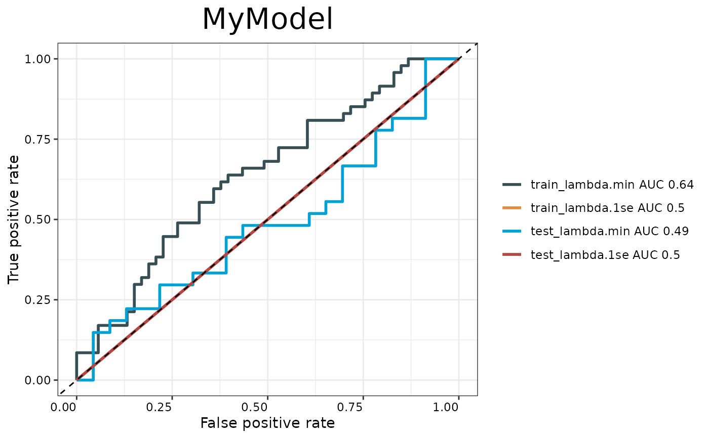

Generates ROC curves for model evaluation comparing training and testing performance at both lambda.min and lambda.1se. Creates a ggplot visualization with AUC values in the legend.
Arguments
- train.x
Training predictors matrix.
- train.y
Training outcomes (binary factor).
- test.x
Testing predictors matrix.
- test.y
Testing outcomes (binary factor).
- model
Fitted cv.glmnet model.
- modelname
Character string for plot title.
- cols
Optional color vector for ROC curves.
- palette
Color palette name from IOBR palettes. Default is `"jama"`.
Examples
if (requireNamespace("glmnet", quietly = TRUE)) {
set.seed(123)
train_data <- matrix(rnorm(100 * 5), ncol = 5)
train_outcome <- rbinom(100, 1, 0.5)
test_data <- matrix(rnorm(50 * 5), ncol = 5)
test_outcome <- rbinom(50, 1, 0.5)
fitted_model <- glmnet::cv.glmnet(train_data, train_outcome, family = "binomial", nfolds = 5)
p <- PlotAUC(train_data, train_outcome, test_data, test_outcome, fitted_model, "MyModel")
print(p)
}
